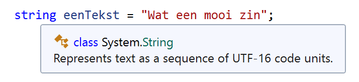

H3: Strings en hun methoden
Labo 1 · week 3
Vandaag
- Strings: wat is een string, en hoe verschilt die van een
charof eenint? - Strings samenvoegen: met
+en met stringinterpolatie$ - Omzetten: van en naar strings met
Convert - Functionaliteit van strings:
Length,Substring,IndexOf,ToUpper/ToLower,Replace,Trim
Vandaag gaan we het over strings hebben. Nee, niet die van op het strand.
Strings
Wat is een string?
Een string is een reeks van 0, 1 of meerdere lettertekens.

Hover in Visual Studio over het string-keyword
Ook een lege string "" is een string. Net zoals een lege koelkast nog altijd een koelkast is. Alleen triester.
char of string?
Tip
'a' en "a" zien er hetzelfde uit, maar zijn verschillende types.
Zegt een char tegen een string: “Jij hebt makkelijk praten, jij hebt meer dan één letter.”
Tekst "1" of getal 1?
Output:
1
1Op het scherm zie je hetzelfde, maar het eerste is tekst (een reeks tekens) en het tweede een getal, waarmee je kan rekenen.
"1" + "1" geeft "11". Wiskundeleerkrachten haten deze ene truc.
Fout gebruik compileert niet
- Regel 1: een int-literal toekennen aan een string-variabele ❌
- Regel 2: een string-literal toekennen aan een int-variabele ❌
- De compiler weigert dit, en Visual Studio onderlijnt het in het rood.
De compiler is zoals een portier: verkeerd type, niet binnen.
Even testen 🤔
Welke regels compileren?
| Code | Compileert? |
|---|---|
string answer = "42"; |
✅ |
string houseNumber = 42; |
❌ een int in een string |
int age = 42; |
✅ |
int score = "42"; |
❌ een string in een int |
char initial = 'S'; |
✅ |
char grade = "A"; |
❌ een string in een char |
42 is het antwoord op alles. Behalve tussen aanhalingstekens, dan is het gewoon tekst.
Strings samenvoegen
Het uitgangspunt
We hebben twee variabelen:
We willen een nieuwe string result met als inhoud:
Ik ben Finkelstein en ik ben 13 jaar oud.Twee manieren:
- de
+-operator - stringinterpolatie met
$
Finkelstein is al jaren 13. Niemand heeft ooit de variabele aangepast.
Manier 1: de +-operator
- Tussen strings betekent
+niet optellen maar aan elkaar plakken. - Is een stuk geen string (zoals
age)? Dan wordt eerst de tekstvoorstelling bepaald.
Opmerking
Deze manier bestaat in heel veel programmeertalen en is eenvoudig, maar ze is niet bijzonder goed.
Strings plakken met +: knutselen voor programmeurs. Lijm niet inbegrepen.
Nadelen van +
- Je moet steeds wisselen tussen aanhalingstekens en plustekens.
- Spaties en leestekens juist zetten is lastig.
- Een specifiek formaat (bv. aantal cijfers na de komma) vraagt veel extra werk.
- Grote, complexe strings zo opbouwen kost veel rekentijd.
Vergeet je de spaties, dan krijg je Ik benFinkelsteinen ik ben13jaar oud. Klinkt als een Duits samengesteld woord.
Manier 2: stringinterpolatie met $
- Het
$vóór de string zegt: alles tussen{ }is code. {name}wordt vervangen door de inhoud vanname, en{age}door die vanage.- Wat tussen de accolades staat, wordt automatisch omgezet naar tekst. Dat geldt ook voor een
int. - Je schrijft de string zoals hij er uiteindelijk uitziet, en dat leest veel makkelijker.
Het $-teken: het enige geld dat je in deze opleiding gratis krijgt.
Naast elkaar
+-operator
Interpolatie $
Belangrijk
Gebruik stringinterpolatie, tenzij anders gevraagd. Online zie je nog (vooral oudere) code die het anders doet.
Kies interpolatie. Je toekomstige zelf stuurt je een bedankkaartje. Opgesteld met interpolatie, uiteraard.
Veelgemaakte fout
Ik ben {name} en ik ben {age} jaar oud.Het $ ontbreekt, dus C# behandelt de accolades als gewone tekst.
Zonder $ geen centen. Eh, geen waarden.
Omzetten van en naar strings
Het probleem
Je kan een string niet toekennen aan een int (en omgekeerd).
Toch wil je dat vaak:
Oplossing: de methoden van de Convert-klasse.
ReadLine geeft altijd een string. Ook als je er heel beleefd een getal in typt.
De Convert-klasse
Tussen de ronde haakjes zet je de variabele of literal die je wil omzetten.
| gewenst type | methode |
|---|---|
int |
ToInt32 |
double |
ToDouble |
string |
ToString |
bool |
ToBoolean |
byte |
ToByte |
Een int krijg je dus met ToInt32, niet met “ToInt”. Alle conversies in de documentatie
Convert: de enige bekering die in deze les verplicht is.
Invoer van de gebruiker verwerken
Hoe oud ben je?
19
Volgend jaar ben je 20.Foutloze input?
Wat als de gebruiker IKWEEG10KG intypt in plaats van 10,3?
➡️ De conversie mislukt en je programma crasht.
Opmerking
In het begin van de leercurve ga je er altijd van uit dat de gebruiker foutloze input geeft. Hoe je fouten afhandelt, leer je later.
We gaan ervan uit dat de gebruiker altijd foutloze input geeft. Ja, wij lachen ook.
Kommagetallen: punt of komma?
Invoer door de gebruiker
Dit hangt af van de landinstellingen van je besturingssysteem:
- Belgisch/Nederlands → met een komma:
9,81 - Engels → met een punt:
9.81
Functionaliteit van strings
Length
Het aantal symbolen in de string:
Tip
Length is een eigenschap, geen methode, en krijgt dus geen haakjes ().
De spatie telt mee. Net als dat ene vriendje dat altijd meekomt zonder uitgenodigd te zijn.
De index van een teken
Elk symbool heeft een nummer: de index. We beginnen te tellen bij 0!
| H | a | l | l | o | , | ␣ | w | e | r | e | l | d |
|---|---|---|---|---|---|---|---|---|---|---|---|---|
| 0 | 1 | 2 | 3 | 4 | 5 | 6 | 7 | 8 | 9 | 10 | 11 | 12 |
- Het eerste teken heeft index
0. - Het laatste teken heeft index
Length - 1(hier13 - 1 = 12).
Een programmeur heeft drie kinderen: kind 0, kind 1 en kind 2. Verjaardagsfeestjes zijn er erg verwarrend.
Substring
Een deel van een string opvragen: Substring(startindex, lengte)
| H | a | l | l | o | , | ␣ | w | e | r | e | l | d |
|---|---|---|---|---|---|---|---|---|---|---|---|---|
| 0 | 1 | 2 | 3 | 4 | 5 | 6 | 7 | 8 | 9 | 10 | 11 | 12 |
Strings zijn onveranderlijk ⚠️
Voer uit en verklaar: wat verschijnt er op het scherm?
Belangrijk
Je kan een string in C# niet aanpassen. Een methode zoals Substring berekent een nieuwe string. Die moet je tonen of opslaan, anders gaat het resultaat verloren (zoals bij A).
Een string is als een koppige collega: je kan hem niet veranderen, je kan alleen een nieuwe aanwerven.
IndexOf
Waar komt een substring voor? Je krijgt de index van de eerste keer dat hij voorkomt.
-1 betekent: komt niet voor. En let op: IndexOf is hoofdlettergevoelig.
| C | # | ␣ | i | s | ␣ | c | o | o | l |
|---|---|---|---|---|---|---|---|---|---|
| 0 | 1 | 2 | 3 | 4 | 5 | 6 | 7 | 8 | 9 |
"maandagochtend".IndexOf("motivatie") geeft -1.
ToUpper / ToLower
Berekent een versie in hoofdletters of kleine letters.
Console.WriteLine("C# is cool".ToUpper()); // C# IS COOL
Console.WriteLine("C# is cool".ToLower()); // c# is cool
string text = "DiT iS EnGe TeKsT";
text.ToLower();
Console.WriteLine(text); // DiT iS EnGe TeKsT (ongewijzigd!)
string upperText = text.ToUpper();
Console.WriteLine(upperText); // DIT IS ENGE TEKSTToUpper: voor als je commentaar op sociale media NOG OVERTUIGENDER moet klinken.
Replace
Vervangt een substring door een andere substring.
Komt de te vervangen tekst niet voor, dan verandert er niets en krijg je ook geen fout.
"maandag".Replace("maandag", "vrijdag") werkt perfect. Alleen niet in je agenda.
TrimStart / TrimEnd / Trim
Verwijdert witruimte (spaties, tabs, newlines, …) aan het begin en/of einde.
Tip
Handig bij invoer van de gebruiker: Console.ReadLine().Trim() haalt per ongeluk getypte spaties weg.
Waarom ging de string naar de kapper?
Hij moest getrimd worden.
Samengevat
| Wat | Voorbeeld | Resultaat |
|---|---|---|
| interpolatie | $"Ik ben {name}" |
Ik ben Finkelstein |
| conversie | Convert.ToInt32("19") |
19 (int) |
| lengte | "hallo".Length |
5 |
| deel | "Hallo, wereld".Substring(4, 5) |
o, we |
| zoeken | "C# is cool".IndexOf("cool") |
6 |
| hoofdletters | "C# is cool".ToUpper() |
C# IS COOL |
| vervangen | "C# is cool".Replace("C#", "Racket") |
Racket is cool |
| witruimte weg | " hoi ".Trim() |
hoi |
Belangrijk
Een string verandert nooit. Een methode geeft altijd een nieuwe string terug.
Dat was het. No strings attached.
Aan de slag 💻
Maak in de klasse StringsEnHunMethoden:
- CapitalLetters: lees tekst in en toon die in hoofdletters
- H3-string-interpolation: herschrijf
MultiplicationTablesenSpacemet stringinterpolatie - H3-VATCalculation: vraag een bedrag en een btw-percentage met
Convert.ToInt32en toon het resultaat met interpolatie
👉 Daarna: de volgende oefeningen uit de cursus (LeetSpeak, …)
Vragen? Ik zet ze om met Convert.ToAntwoord(). Bestaat niet. Helaas.

Programmeren & OOP · H3 Strings en hun methoden · labo 1